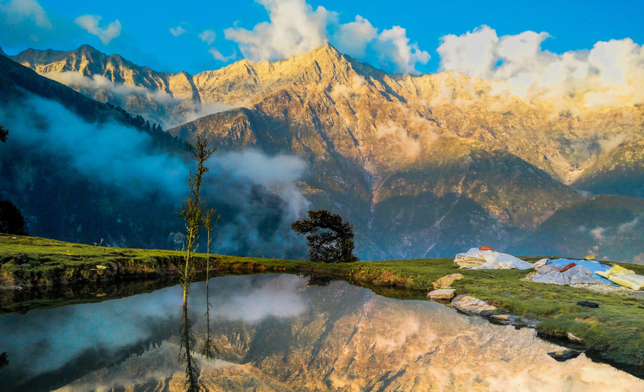

TYPES OF TOURISM
Adventure tourism

As a kind of tourism in India, adventure tourism has recently grown in India. This involves exploration of remote areas and exotic locales and engaging in various activities. For adventure tourism in India, tourists prefer to go for trekking to places like Ladakh, Sikkim, and Himalaya. Himachal Pradesh and Jammu and Kashmir are popular for the skiing facilities they offer. Whitewater rafting is also catching on in India and tourists flock to places such as Uttranchal, Assam, and Arunachal Pradesh for this adrenalin-packed activity.
Beach Tourism
India’s vast coastline and islands provides ample opportunities for fun packed tourism. Kerala, Goa, Andaman & Nicobar Islands, Lakshadweep islands attract tourists in large numbers all around the year.
Cultural tourism
India is known for its rich cultural heritage and an element of mysticism, which is why tourists come to India to experience it for themselves. The various fairs and festivals that tourists can visit in India are the Pushkar fair (Rajasthan), Taj Mahotsav (Uttar Pradesh), and Suraj Kund mela (Haryana). Sites like Ajanta & Ellora caves (Maharshtra), Mahabalipuram (TamilNadu), Hampi (Karnataka), Taj Mahal (Uttar Pradesh), Hawa Mahal (Rajasthan).
Eco tourism
Among the types of tourism in India, ecotourism have grown recently. Ecotourism entails the sustainable preservation of a naturally endowed area or region. This is becoming more and more significant for the ecological development of all regions that have tourist value. For ecotourism in India, tourists can go to places such as Kaziranga National Park (Assam), Gir National Park (Gujarat), and Kanha National Park (Madhya Pradesh).
Medical tourism
Tourists from all over the world have been thronging India to avail themselves of cost-effective but superior quality healthcare in terms of surgical procedures and general medical attention. There are several medical institutes in the country that cater to foreign patients and impart top-quality healthcare at a fraction of what it would have cost in developed nations such as USA and UK. The city of Chennai (Tamil Nadu) attracts around 45% of medical tourists from foreign countries.
Wildlife tourism
India has a rich forest cover which has some beautiful and exotic species of wildlife – some of which that are even endangered and very rare. This has boosted wildlife tourism in India. The places where a foreign tourist can go for wildlife tourism in India are the Sariska Wildlife Sanctuary, Keoladeo Ghana National Park (Rajasthan), and Corbett National Park (Uttarkhand).